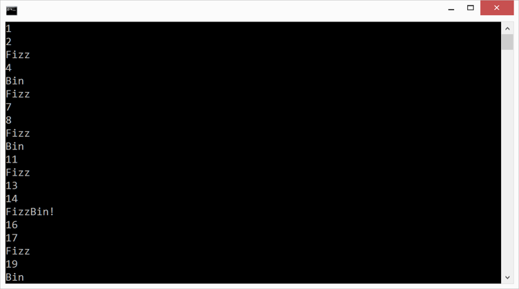

Duration
20 minutes
Lab goals
Here you write a program called FizzBin to test the divisibility of the integers 1 to 100. You will need a loop to let you work through the integers one at a time. For each integer, you must test if it is divisible by 3, by 5, by both 3 and 5, or by neither of them. You must print out a different message based on the results of your tests:
- "FizzBin!" if the value is divisible by both 3 and 5
- "Fizz" if the value is divisible by 3 but not 5
- "Bin" if the value is divisible by 5 but not 3
- The value itself if it is not divisible by either 3 or 5
Below is the output from the finished application (output shown for the first 20 integers only).
The high-level goals for the exercise are listed below:
- Code a
forloop - Determine if an integer is evenly divisible
- Code nested
ifstatements - Use the logical-and operator
&&
Required assets
The provided Exercise 2/Part2.Completed folder contains a completed version of the exercise you can use to check your work. Please make sure you have this folder before you begin.
Steps
Below are the step-by-step instructions to implement the exercise.
Create a new Console application
- Start Visual Studio.
- Create a new Console Project using either the New Solution... link on the home screen or the File > New > Solution menu entry.
- Name the Project and Solution FizzBin. The name FizzBin is a reference to a fictional card game; however, the program you will write here is unrelated to the card game.
- Fill in the Location field with the name of the folder where you would like to store your work.
- Click OK.
Implement your program
- The file Program.cs should already be open in the text editor. If it is not, open it by double-clicking on the filename in the Solution view.
-
Please delete the
Console.WriteLineline that Visual Studio generated insideMain. -
All your code will be written inside the curly braces that delimit
Main. Position the cursor in the text-editor window on the line below the open-curly-brace forMain. -
Add a loop that will run 100 times to your program. Either a
forloop or awhilewill work for this; however, most programmers would use aforloop because you have a fixed number of iterations and the stop-condition is simple. The syntax is shown below; this loop will run 5 times with values ofiequal to 1, 2, 3, 4, and 5.for (int i = 1; i <= 5; i++) { // loop 'body' goes here, i.e. the work to do each time }Note that there is nothing special about the use ofias the variable name inside the loop. However, it is a convention that has been around for many years in programming so you should probably follow it unless you have a good reason to use a different name. There is some debate over the origin ofias the loop variable. Many people think it comes from math where the lettersiandjare often used as subscripts. Others think it is shorthand for the wordindex. -
Inside your loop, add a series of
if-elsestatements to determine ifiis divisible by 3, by 5, by both 3 and 5, or neither. Here are the messages to print in each of the four cases:- "FizzBin!" if the value is divisible by both 3 and 5
- "Fizz" if the value is divisible by 3 but not 5
- "Bin" if the value is divisible by 5 but not 3
- The value itself if it is not divisible by either 3 or 5
ifstatement that tests divisibility. Note the use of logical-and&&to combine two tests together. "And" means that both tests must be true for the entire test to be true (there is also a logical-or operator||but you will not need it for this program).if (i % 2 == 0 && i % 4 == 0) // test if i is divisible by both 2 and 4 { // ... } - Run your program by clicking on the Run > Start Without Debugging menu entry (recall that clicking on Start Without Debugging actual does three things: saves your work, builds your project, and runs your program). A Console window should appear on your screen and display the program output as shown below. The output will be larger than the Console can show so you will need to use the scroll bar to see everything.
Summary
This exercise explored thefor loop and the if statement. These are core
building blocks for controlling the execution of your programs: if statements let you
react to different conditions and loops allow you to easily process large collections of data.
It is likely that you will find them useful in every nontrivial program you develop.